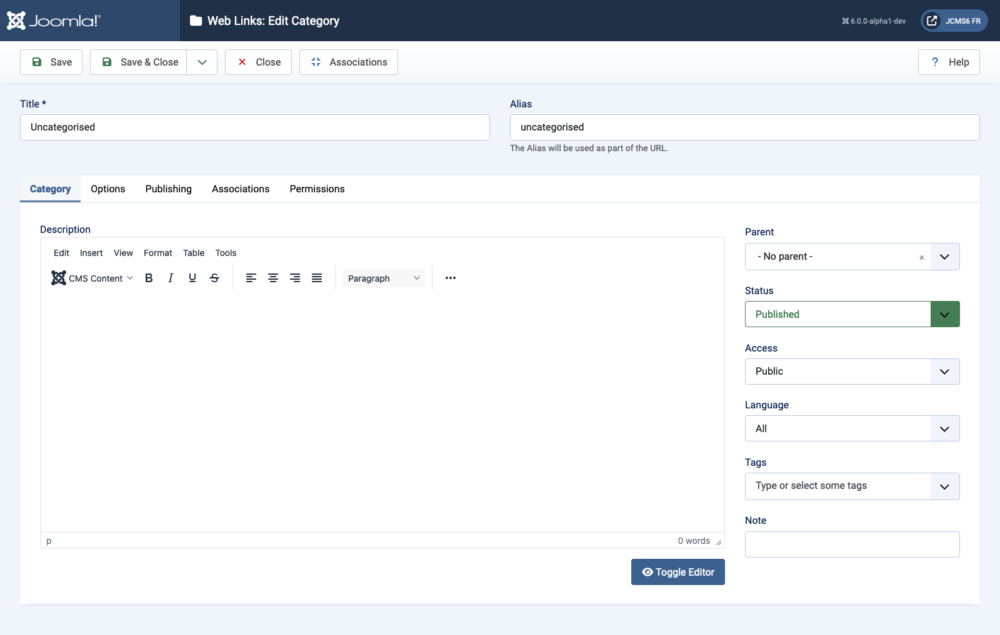

Joomla Help Screens
Web Links: Edit Category
Description
The Web Links: Edit Category page is used to create a new Category or edit an existing one. Note that you need to create at least one Web Link Category before you can create a Web Link. Also, Web Link Categories are separate from other types of Categories, such as those for Articles, Banners, and News Feeds.
Common Elements
Some elements of this page are covered in separate Help articles:
How to Access
- Select Component → Web Links → Categories from the Administrator menU. Then...
- Select the New button in the Toolbar to add a new Category. Or...
- Select a Title from the list Title column to edit an existing Category.
Screenshot

Form Fields
- Title The Title for this item. This may or may not display on the page, depending on the parameter values you choose.
- Alias The internal name of the item. Normally, you can leave this blank and Joomla will fill in a default value Title in lower case and with dashes instead of spaces.
Category tab
Left panel
- Description The description for the item. Category, Subcategory and Web Link descriptions may be shown on web pages, depending on the parameter settings.